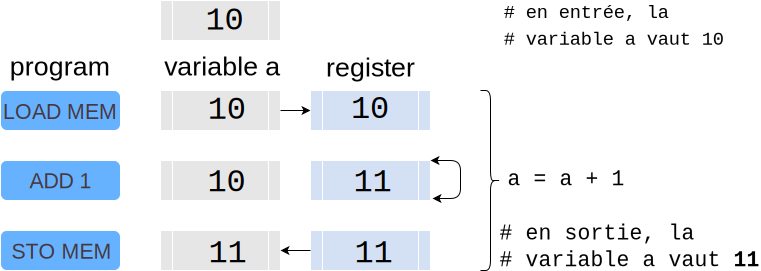
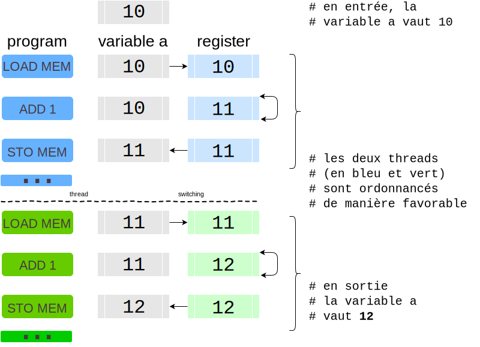
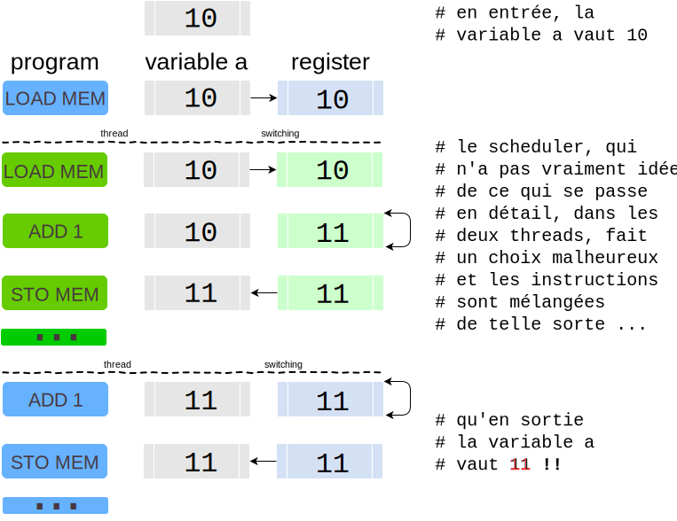

Pourquoi les threads c’est délicat ?¶
Complément - niveau avancé¶
À nouveau dans ce cours nous nous intéressons aux applications qui sont plutôt I/O intensive. Cela dit et pour mettre les choses en perspective, on pourrait se dire que qui peut le plus peut le moins, et que le multi-threading qui est bien adapté au calcul parallèle CPU-intensive, pourrait aussi bien faire l’affaire dans le contexte de l’I/O-intensive.
Il se trouve qu’en fait le multi-theading présente un inconvénient assez notable, que nous allons tenter de mettre en évidence dans ce complément; sur un exemple hyper-simple, nous allons illustrer la notion de section critique, et montrer pourquoi on doit utiliser parfois - trop souvent - la notion de lock ou verrou lorsqu’on utilise des threads.
avertissement : pas que pour Python¶
Je dois préciser avant d’aller plus loin que pour cette discussion, nous allons oublier le cas spécifique de Python; les notions que nous abordons tournent autour des relations entre l’OS et les applications, qui sont valables en général.
En fait c’est même pire que ça, et nous verrons les implications pour Python à la fin du complément; vous avez peut-être déjà entendu parler du GIL, mais on va avoir besoin d’appréhender cette histoire de section critique pour mieux comprendre les tenants et les aboutissements du GIL en Python.
processus et threads¶
On rappelle que, pour écrire des programmes parallèles, l’Operating System nous offre principalement deux armes :
les processus
les threads
Il faut se souvenir que la première fonction de l’OS est justement que plusieurs programmes puissent s’exécuter en même temps, c’est-à-dire partager les ressources physiques de l’ordinateur, et notamment le CPU et la mémoire, sans pouvoir se contaminer l’un l’autre.
Aussi, c’est par construction que deux processus différents se retrouvent dans des espaces totalement étanches, et qu’un processus ne peut pas accéder à la mémoire d’un autre processus.
On peut naturellement utiliser des processus pour faire du calcul parallèle, mais cette contrainte de naissance rend l’exercice fastidieux, surtout lorsque les différents programmes sont très dépendants les uns des autres, car dans ce cas bien sûr ils ont besoin d’échanger voire de partager des données (je m’empresse de préciser qu’il existe des mécanismes pour faire ça - notamment : librairies de mémoire partagée, envoi de messages - mais qui induisent leur propre complexité…).
Par contraste un processus peut contenir plusieurs threads, chacun disposant pour faire court, d’une pile et d’un pointeur de programme - en gros donc, où on en est dans la logique de une exécution séquentielle; l’intérêt étant que de tous les threads partagent à présent la mémoire du processus; c’est donc un modèle a priori très attractif pour notre sujet.
le scheduler¶
Comme ces notions de processus et de threads sont fournies par l’OS, c’est à lui également que revient la responsabilité de les faire tourner; cela est fait dans le noyau par ce qu’on appelle le scheduler.
Comment ça marche ? dans le détail, c’est un sujet très copieux, il existe une littérature hyper-abondante sur le sujet, et donc une extrême variété de stratégies et de réglages possibles.
Mais pour ce qui nous intéresse, nous n’allons retenir que ces caractéristiques de haut niveau très simples :
le scheduler maintient une liste de processus et de threads à faire tourner;
il décide - à une fréquence assez élevée - de leur donner la main à tour de rôle;
simplement il faut bien réaliser qu’à ce stade, ce que manipule le scheduler, c’est essentiellement du code binaire, très proche du processeur, après toutes les phases de compilation et optimisation.
context switches¶
L’instant où le scheduler décide de suspendre l’exécution d’un processus - ou thread - pour donner la main à un autre, s’appelle un *context switch; on parle de process switch lorsqu’on passe d’un processus à un autre, et de task switch ou thread switch lorsqu’on passe d’un thread à un autre à l’intérieur d’un processus.
Le point important pour nous, c’est que le scheduler est un morceau de code générique, il fait donc son travail de manière neutre pour tous les processus ou threads, indépendamment du langage par exemple, ou du domaine d’application; et que le découpage du temps en slots alloués aux différents joueurs se fait bien évidemment sur la base des instuctions élémentaires du processeur - ce qu’on appelle les cycles.
On s’intéresse davantage aux threads dans la suite, et nous allons voir que dans ce cas, cela crée parfois de mauvaises surprises.
une simple opération d’addition¶
Pour illustrer notre propos, nous allons étudier une opération extrêmement banale qui consiste à incrémenter la valeur d’une variable.
Il se trouve qu’en pratique cette opération se décompose en réalité en 3 opérations élémentaires, comme le montre la figure suivante; à nouveau le langage utilisé dans toutes ces illustrations n’est pas du Python - typiquement une opération comme celle-ci en Python va occasionner bien plus d’instructions élémentaires que cela - disons pour fixer les idées que c’est quelque chose comme du C; peu importe en fait, c’est l’idée qui est importante.

Figure 1 : une instruction du genre de a = a + 1 dans un langage compilé, avec un seul thread
On voit sur cette figure la logique des trois opérations
dans un premier temps on va chercher la valeur de la variable
aqu’on range disons dans un registre - ou un cache;on réalise l’incrémentation de cette valeur dans le registre
puis on recopie le résultat dans la case mémoire originelle, qui correspond à la variable
a
Ce programme fait donc bien ce qu’on veut; si la valeur de a était 10 au début, on y trouve 11 à la fin, tout va bien.
dans deux threads, un scénario favorable¶
À présent, nous allons imaginer le cas de deux threads qui s’exécutent en parallèle, avec un seul processeur;
et admettons que chacun des deux threads exécute une fois a = a + 1 sur une variable globale a.
En admettant comme tout à l’heure que a valait 10 en commençant, on s’attend donc naturellement à ce qu’à la fin a vaille 12 puisqu’on l’aura incrémenté deux fois.
Voyons d’abord un scénario qui se passe bien; le scheduler qui, donc, donne la main alternativement à l’un et l’autre de nos deux threads, a la bonne idée de laisser intègres les deux blocs de 3 instructions, sans y insérer de context switching.

Figure 2 : deux threads, un processeur, dans un scénario favorable
Dans ce scénario, à l’issue des deux threads on a bien, comme attendu, a == 12.
toujours 2 threads, mais pas de chance¶
Mais en fait, il y a un souci avec cette façon de faire.
Ce qu’il faut bien comprendre c’est que du point de vue du scheduler, toutes ces instructions sont pareilles et il n’y a pas, à ce stade, de moyen pour le scheduler, de traiter ce bloc de 3 instructions de manière particulière.
Aussi le scheduler, qui a déjà un travail assez compliqué si on tient compte du fait qu’il doit être fair (donner autant de temps à tout le monde), choisit les points de context switching comme il le peut au milieu de ce qui, pour lui, n’est qu’une longue liste d’instructions.
Imaginons du coup un scénario moins favorable que le précédent, dans lequel le scheduler, pas de chance, choisit de faire un context switching juste après le premier LOAD du premier thread; ça nous donne alors l’exécution décrite dans cette figure :

Figure 3 : deux threads, un processeur, mais un choix de scheduling malheureux
Du coup ce qui se passe ici, c’est que le deuxième fil fait son LOAD à partir de la variable a qui n’a pas encore été modifiée, et du coup les deux threads incrémentent tous les deux la valeur 10, et à l’issue de l’exécution des deux threads, on a maintenant a == 11 !!
Pour résumer donc : on part de a == 10, on exécute 2 threads qui font tous les deux a = a + 1 et au final, on se retrouve avec a == 11; gros souci donc !
phénomène général¶
À ce stade vous pourriez vous dire que j’ai triché, et que j’ai choisi un scénario irréaliste; par exemple qu’en pratique l’incrémentation de 1 ça se fait en hardware en une seule instruction.
Oui bien sûr, l’exemple est choisi pour rester aussi simple que possible; mais si vous n’êtes pas convaincu avec a = a + 1, prenez simplement a = a + b, vous verrez que c’est exactement le même souci.
En fait le souci que l’on a, de manière générale, c’est que :
dans un langage de programmation un tout petit peu évolué, un fragment de code (même réduit à une instruction) se traduit presque toujours en plusieurs instructions binaires pour le processeur
pour que le programme fonctionne correctement dans un mode multi-thread, certains fragments de code, et notamment ceux qui accèdent à de la mémoire partagée, doivent être exécutés de façon atomique (c-à-d ne pas être interrompus en plein milieu par le scheduler)
et sans aide du programmeur, le scheduler n’a aucun moyen de savoir où, dans le flot d’instruction binaires, il est légitime ou pas de faire un context switching.
Et avec quelque chose d’un tout petit peu plus compliqué comme a = 2 * a; a = a + 1, on n’a même pas besoin de descendre au niveau du code machine pour exhiber le problème…
verrou et exclusion mutuelle¶
Du coup, pour rendre la programmation par thread utilisable en pratique, il faut lui adjoindre des mécanismes, accessibles au programmeur, pour rendre explicite ce type de problèmes.
La notion la plus simple de ces mécanismes est celle de verrou pour implémenter une exclusion mutuelle; pour en donner une illustration très rapide, voyons cela sur notre exemple.
Nous allons remplacer ceci :
# thread A
a = a + 1
# thread B
a = a + 1
par ceci
# thread A
get_lock(lock)
a = a + 1
release_lock(lock)
# thread B
get_lock(lock)
a = a + 1
release_lock(lock)
Dans cette nouvelle version, un nouvel objet global lock est introduit, qui peut être dans deux états libre ou occupé.
De cette façon, celui des deux threads qui arrive à ce stade en premier obtient le verrou (le met dans l’état occupé), et fait son traitement avant de le relâcher; du coup l’autre doit attendre que le premier ait fini tout le traitement de sa section critique pour pouvoir commencer le sien.
Comme on le voit, l’idée consiste à permettre au programmeur de rendre explicite l’exclusion mutuelle qu’il est nécessaire d’assurer pour que le programme fonctionne comme prévu, et de façon déterministe.
ce qu’il faut retenir¶
Pour conclure cette partie, retenons que l’on peut écrire du code multi-thread dont le comportement est déterministe, mais au prix de l’ajout dans le code d’annotations qui limitent les modes d’exécution; ce qui a tendance à rendre les choses complexes, et donc coûteuses.
Et retenons que le problème principal ici est lié à l’absence de contrôle, par le programmeur, sur les context switchings; et du coup ceux-ci peuvent intervenir à n’importe quel moment.
Nous verrons que la situation est très différente avec le paradigme async/await/asyncio.
le cas de Python : le GIL¶
Dans ce contexte, le cas des programmes Python est un peu spécial; ce n’est pas un langage compilé, ce qui signifie que du point de vue de l’OS et du scheduler, le processus qui tourne est en fait l’interpréteur Python.
Et il se trouve que l’interpréteur Python est un exemple de programme qui pourrait être sensible au type de problèmes que nous venons d’étudier.
Voyons un exemple pour vous faire entrevoir la complexité du sujet. Vous vous souvenez qu’on a parlé de garbage collection, et de compteur de références. Voyons comment le fait de maintenir un compteur de références crée le besoin d’écrire dans la mémoire, alors qu’en lisant le code Python on ne voit que des accès en lecture.
# on est bien d'accord que ce code ne fait que lire
# le contenu de x et ne modifie pas sa valeur
def foo(x, max_depth, depth=1):
print(f"in {depth}th function call we see {x}")
if depth < max_depth:
foo(x, max_depth, depth+1)
# j'exécute ce code sur un objet tout neuf
a = []
# et je confirme bien qu'on n'y touche jamais
foo(a, 3)
in 1th function call we see []
in 2th function call we see []
in 3th function call we see []
# mais en fait pendant toute l'exécution de ce code
# il y a des changements qui sont faits dans l'objet a
# en tous cas dans sa représentation interne,
# regardons notamment le compteur de références
# pour importer getrefcount() qui permet de
# lire le compteur de références d'un objet
import sys
# la même logique exactement que plus haut,
# mais ici affiche aussi le compteur de références
def bar(x, max_depth, depth=1):
print(f"in {depth}th function call we see {x} that has {sys.getrefcount(x)} refs")
if depth < max_depth:
bar(x, max_depth, depth+1)
bar(a, 3)
in 1th function call we see [] that has 4 refs
in 2th function call we see [] that has 6 refs
in 3th function call we see [] that has 8 refs
Du coup, et précisément pour protéger son fonctionnement intime, l’interpréteur Python est implémenté de telle sorte à empêcher l’exécution simultanée de plusieurs threads dans un même processus Python ! Cela est fait au travers d’un verrou central pour tout l’interpréteur, qui s’appelle le GIL - le Global Interpreter Lock.
Aussi, bien qu’il est possible - notamment au travers de la librairie threading - de concevoir des programmes multi-threadés en Python, par construction, ils ne peuvent pas s’exécuter en parallèle, et notamment ne peuvent pas tirer profit d’une architecture multi-processeur (pour cela en Python, il ne reste que l’option multi-processus). Ce qui, il faut bien l’admettre, ruine un peu l’intérêt…
pour en savoir plus¶
Cette présentation est juste une mise en perspective, elle est volontairement superficielle, d’autant que nous sommes clairement à côté de notre sujet. Si vous souhaitez approfondir certains de ces points (malheureusement sur ces sujets pointus les sources anglaises, même sur wikipedia, sont souvent préférables…) :
sur la notion de thread : Thread(computing) on wikipedia
sur le mécanisme de verrou :
sur le GIL : https://realpython.com/python-gil/
remarque à propos des verrous¶
Le lecteur attentif remarquera une contradiction apparente, car dans notre présentation des verrous, on a introduit … un nouvel objet global lock; on pourrait craindre de n’avoir fait ici que de reporter le problème. N’aurait-on pas seulement déplacé le souci qu’on avait avec globale a sur la globale lock ?
En réalité ça n’est pas le cas, cette approche fonctionne vraiment et est massivement utilisée. Elle fonctionne notamment parce que le mécanisme de verrou est cette fois connu du scheduler, qui par conséquent peut garantir le comportement de get_lock() et release_lock().